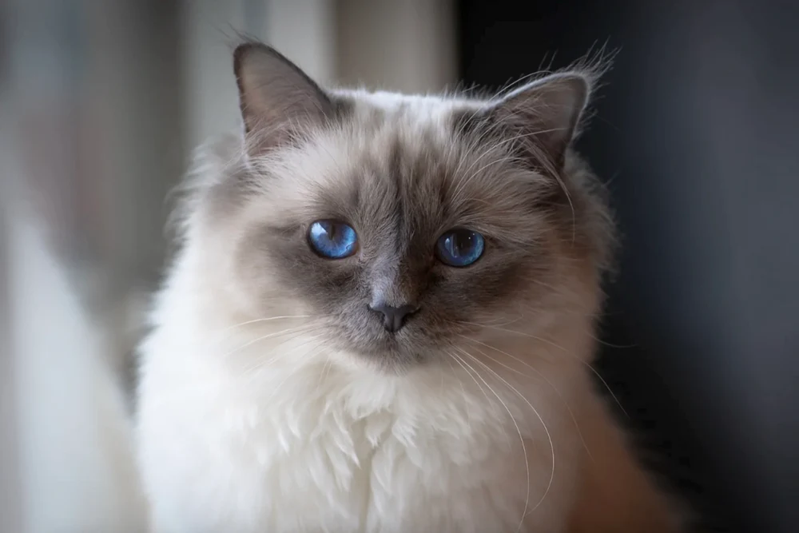
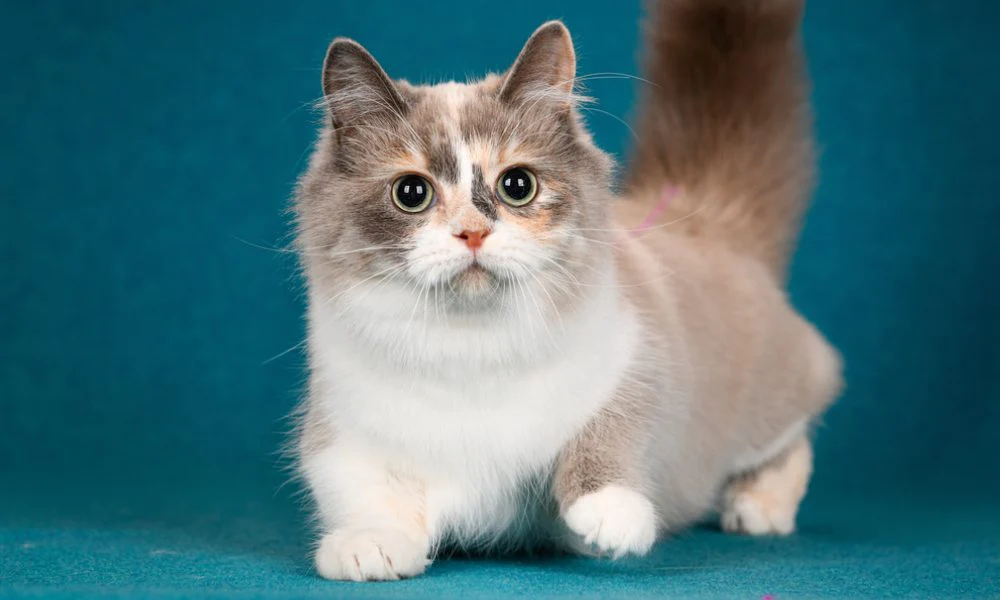
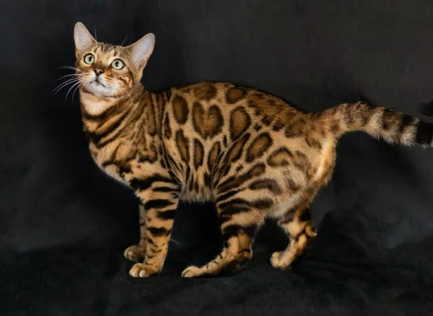
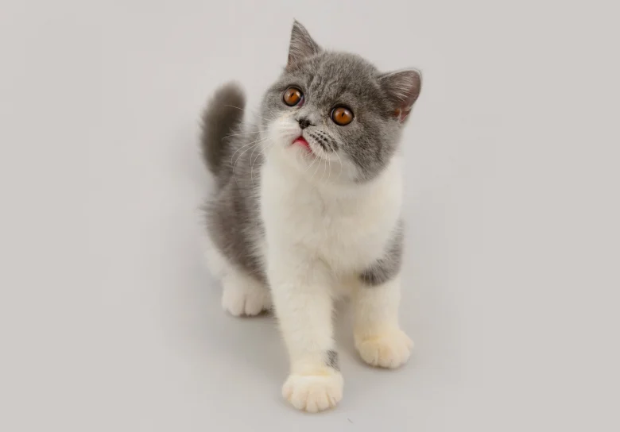
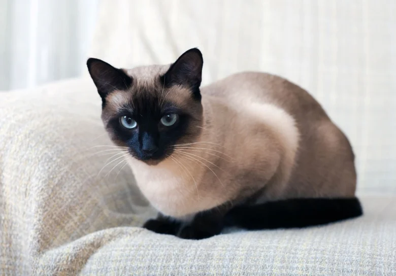

| Race |
Description |
image |
| Sacré de Birmanie |
Le sacré de Birmanie, ou birman, est une race de chat originaire de France. Ce chat de taille moyenne est caractérisé par sa robe à poil mi-long, qui présente le même patron colourpoint que le siamois mais ses pattes sont d'un blanc pur, comme s'il possédait des gants, un élément qui caractérise la race. |
 |
| Munchkin |
Le munchkin est une race de chat originaire des États-Unis, issu de mutation génétique spontanée survenue en 1983. Ce chat est caractérisé par ses pattes courtes, d'où le surnom de « chat basset » qu'on lui donne parfois. |
 |
| chat du bengal |
Le chat Bengal est une race de chat unique en son genre. Après tout, c’est un véritable « tigre domestique » : la race possède un peu de sang sauvage. Les races de chats comme le Bengal ou le Savannah sont le dernier cri dans le monde de l’élevage ! |
 |
| British shorthair |
Le british shorthair est une race de chat originaire de Grande-Bretagne, descendant des chats de ferme britanniques qui aidaient les agriculteurs à se débarrasser de nuisibles. Ces chats sont ensuite appelés british shorthair pour les différencier des chats étrangers, et pour qualifier leur poil court. |
 |
| Exotic |
L’Exotic Shorthair est la version à poil légèrement plus court du Persan. Il reprend ses principales caractéristiques, notamment au niveau de la santé guère optimum en raison d’une face écrasée. Problèmes respiratoires, dentaires et oculaires viennent souvent l’accompagner dans sa vie. Néanmoins, il s’agit d’un chat adorable, attachant, calme et légèrement plus vif que le Persan. Il adore son propriétaire et aime à la fois flemmarder et jouer. Il supporte tout le monde : enfants, adultes, congénères et autres animaux. De plus, il n’est pas vraiment bruyant. |
 |
| Siamois |
Originaire de la Thaïlande, le Siamois est un chat de taille moyenne, beau et élégant, avec son magnifique pelage clair associé à des extrémités bien plus foncées. Sa vivacité et son intelligence sont bien connues, tout comme son tempérament très spécial, du reste. Il s’agit, en effet, d’un félin au caractère bien affirmé, mais aussi et surtout assez changeant. Il alterne phases d’extrême gentillesse et moments capricieux. Le Siamois est aussi réputé pour le grand attachement qu’il manifeste à l’égard de son propriétaire, ainsi que par ses miaulements marqués et fréquents. |
 |
{kind=link}
{kind=link}
{kind=link}
{kind=link}
{kind=link}